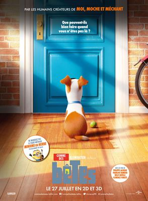
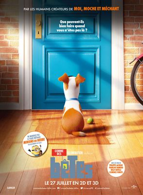

Bienvenue sur FLC flix V3
Un site de FloLeCrafteur
Version 3.9.0
Cette nouvelle version, n'ajoutant malheureusement aucune nouvelle saisons, modifie cependant le système de
MàJ de FLC Flix. Désormais, à partir de cette version (FLC-Flix_3.9), chaques Mises à Jour seront les 1er du Mois
pour les Version Mensuelles, et le Mercredi suivant la MàJ de la version mensuelle.
Par exemple, le mois prochain, donc en Février, la Mise à Jour 3.10 arrivera le 1er. Cependant, la 3.11 arrivera,
non pas le Lundi suivant (5 Février) mais le Mercredi suivant (7 Février).
Cette décision est prise pour me permettre de développer la prochaine version majeure de FLC Flix, la V4, qui
prend énormément de temps à développer, suite aux modifications et ajouts que je m'occupe de programmer.
Sur ce, je vous donnes RDV au 1er Février pour le cap de la 3.10 de FLC Flix!
FloLeCrafteur | Développeur de FLC-Flix
Un site de FloLeCrafteur
Version 3.9.0

 
